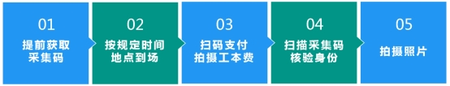

教务处 · 教学通知
关于开展2026届本科毕业生电子图像采集工作的通知
发布时间：2025-10-14
各学院、各位2026届毕业班同学： 根据教育部学籍学历电子注册管理相关规定，高校毕业生必须进行电子图像采集，为中国高等教育学生信息网（简称学信网）提供毕业信息和学位信息的电子照片。如缺少电子照片，将无法进行学历注册及学位信息备案，也无法颁发毕业证书及学位证书。 请所有毕业班同学高度重视，按要求参加集中采集 。 一、图像采集对象： 全校2026届全日制普通本科毕业生（含港澳台学生，不含来华留学生）。 二、拍摄时间： 望江校区：2025年10月20日、10月21日、10月22日 华西校区：2025年10月23日、10月24日 江安校区：2025年10月28日、10月29日 各学院分专业的图像采集时间请查看附件1-3。 三、拍摄地点： 望江校区：文华活动中心五楼合唱室 华西校区：第三教学楼117室 江安校区：法学院报告厅 四、拍摄要求： 1.参加图像采集学生需使用学信网 个人采集码 作为身份识别凭证，无采集码的学生无法进行图像采集。请毕业班同学提前登录学信网获取本人采集码（操作流程详见附件4），避免在采集现场临时操作影响整体拍摄进度。 2.照相工本费15元/人，采集现场手机扫码支付。 3.为避免和背景板颜色重合， 拍摄时请勿着蓝色系服装 。 4.拍摄流程 五、电子图像采集咨询电话：85407456 六、工作要求： 1.各学院须做好2026届毕业生电子图像采集的宣传、组织工作。须指定专人作为该项工作的联系人，负责本学院该项工作的协调和实施。 2.参加电子图像采集的同学须在图像采集两个月以后登录学信网（ http://www.chsi.com.cn ）进行学历图像校对。 3.原则上应严格按照指定时间参加学校统一的电子图像采集，个别错过指定时间的同学可跨校区拍摄 。如确因特殊原因无法到场的同学，请在工作日上午09：00-11：00,下午14：00-16：00至新华社四川分社补拍（补拍地点：成都市陕西街34号201室，联系电话：86149424、86120800）。 附件： 1．2026届本科毕业生电子图像采集时间安排(望江校区) 2．2026届本科毕业生电子图像采集时间安排(华西校区) 3．2026届本科毕业生电子图像采集时间安排(江安校区) 4. 学生获取采集码流程 教务处 2025年10月14日
